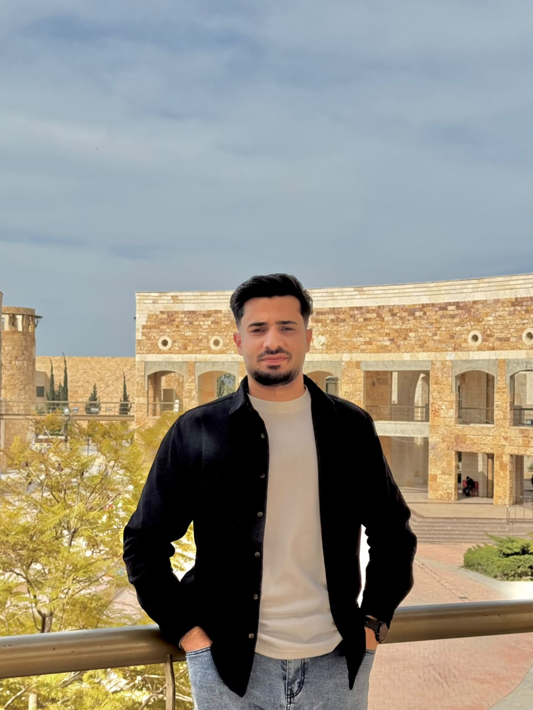

SOFTWARE ENGINEERING STUDENT · FOURTH YEAR
Awad Zakaria
Alzoubi
I am a fourth-year Software Engineering student at Jordan University of Science and Technology. I enjoy designing and building useful, reliable software through hands-on projects.
Get in touch
as profile-photo.jpg
A LITTLE ABOUT ME
Curious by nature.
Focused on better software.
I am studying Software Engineering at Jordan University of Science and Technology. I enjoy understanding how software works, building useful applications, and learning through hands-on projects.
My current focus is strengthening my software engineering foundation and creating applications that are reliable and easy to use. I value careful problem-solving, clear communication, and steady learning.
Email meWHAT I BRING
Skills & tools
A selection of areas I am learning and practicing.
Soft skills
- Analytical thinking
- Problem-solving
- Teamwork
- Communication
- Adaptability
Programming languages & development tools
| Technology | Area | Learn more |
|---|---|---|
| Python | Programming | Python.org ↗ |
| JavaScript | Web development | MDN ↗ |
| React | Web framework | React.dev ↗ |
| Git | Version control | Git-scm.com ↗ |
Update this list to match your actual experience and favorite technologies.
LOOKING AHEAD
Where I see myself
in four years
In four years, I hope to be working as a Software Engineer and building reliable applications that solve real problems. I plan to strengthen my skills in software design, development, testing, and maintenance through coursework and practical projects. I want to gain experience working with a team throughout the software development process, from understanding requirements to delivering a finished product. I also hope to keep learning modern programming tools and improve the quality and usability of the software I create. My goal is to become a dependable engineer who communicates clearly and contributes thoughtful solutions.